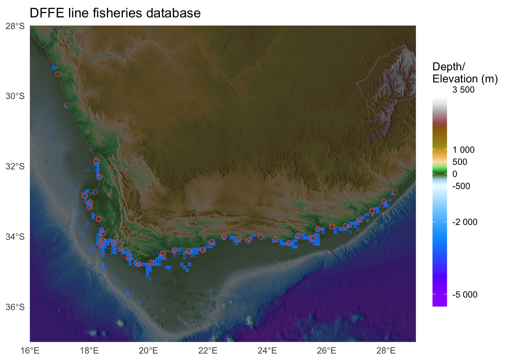
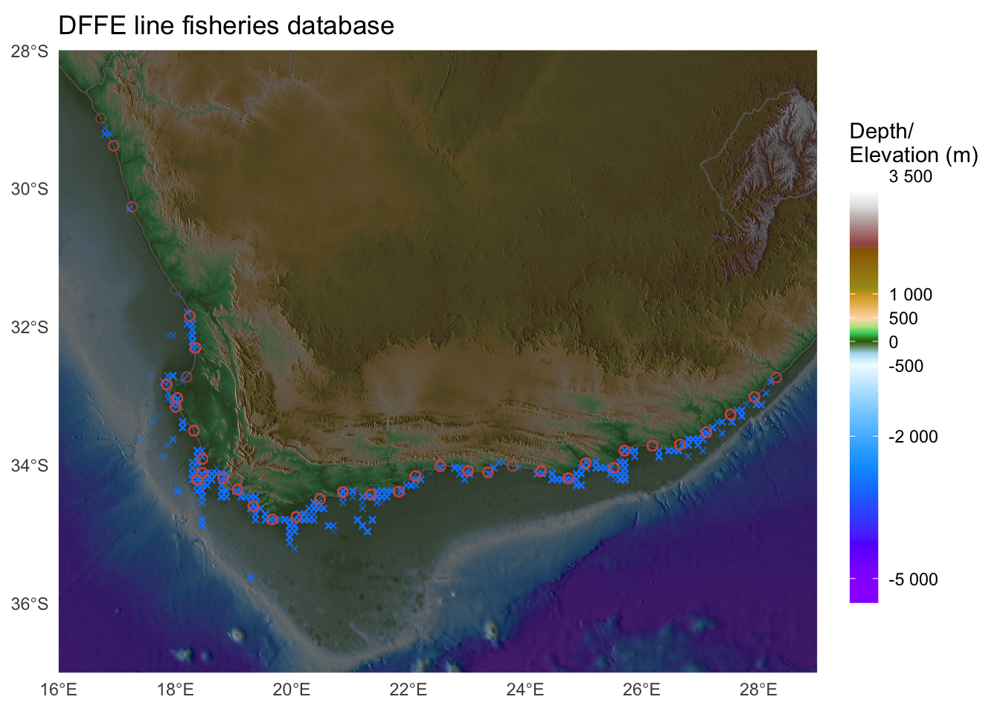
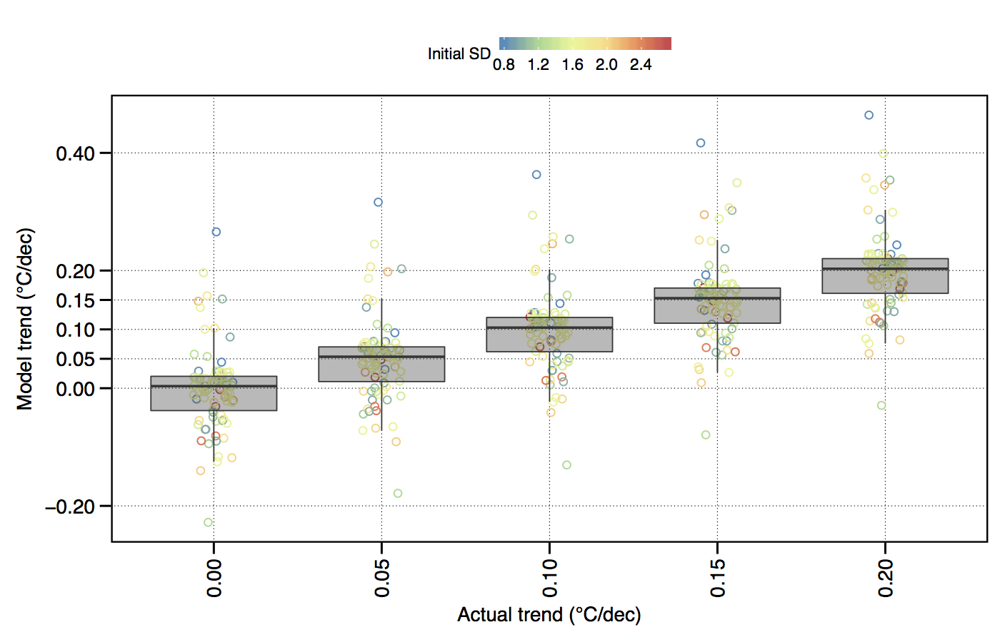
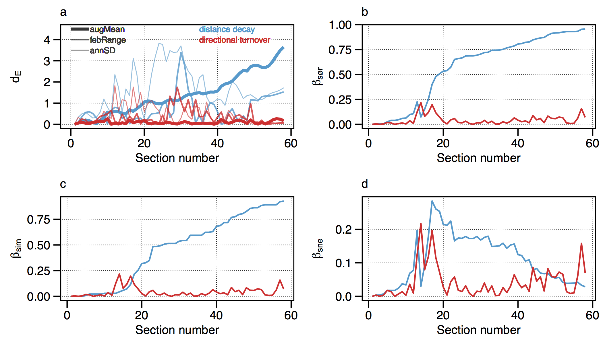
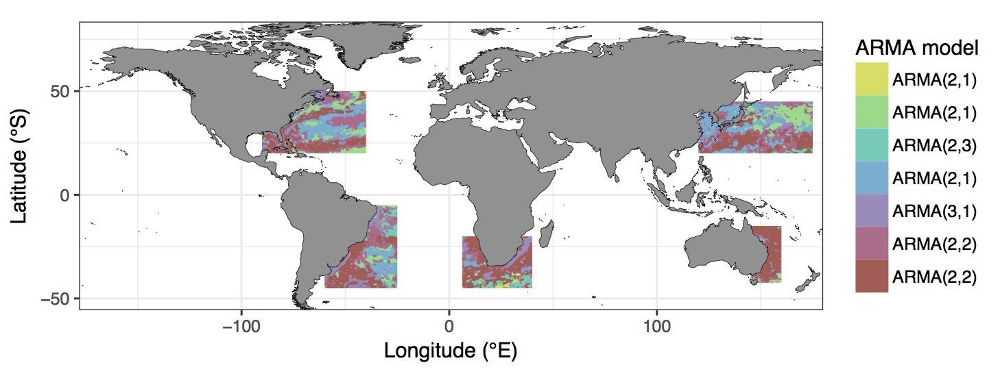
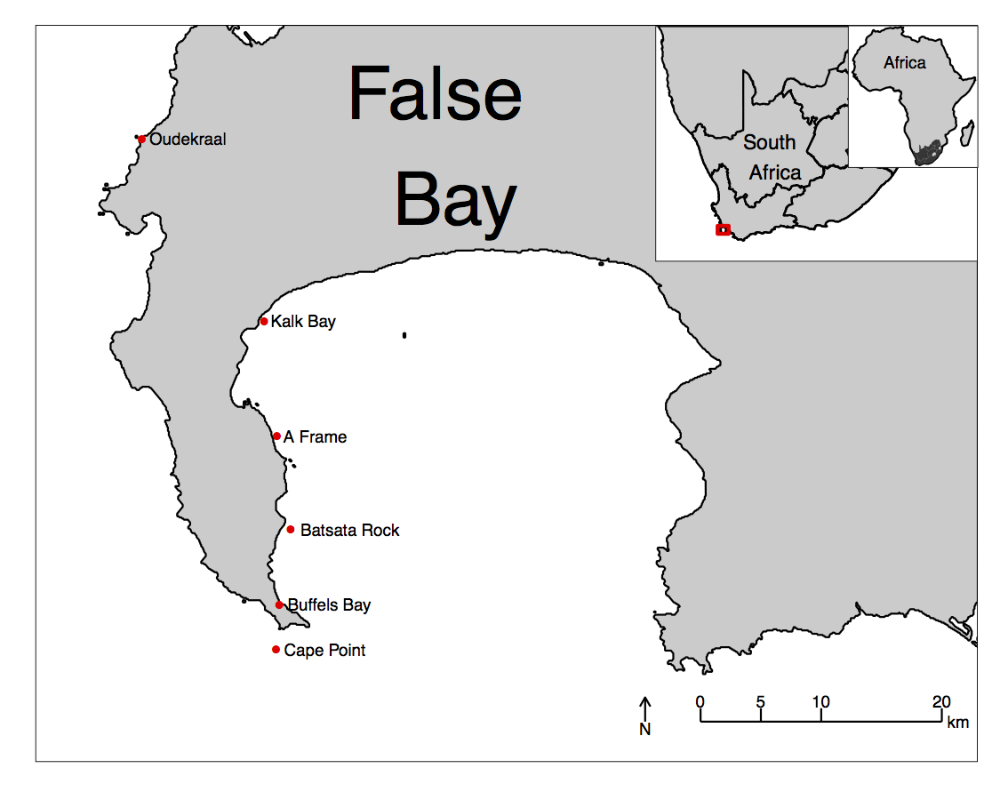
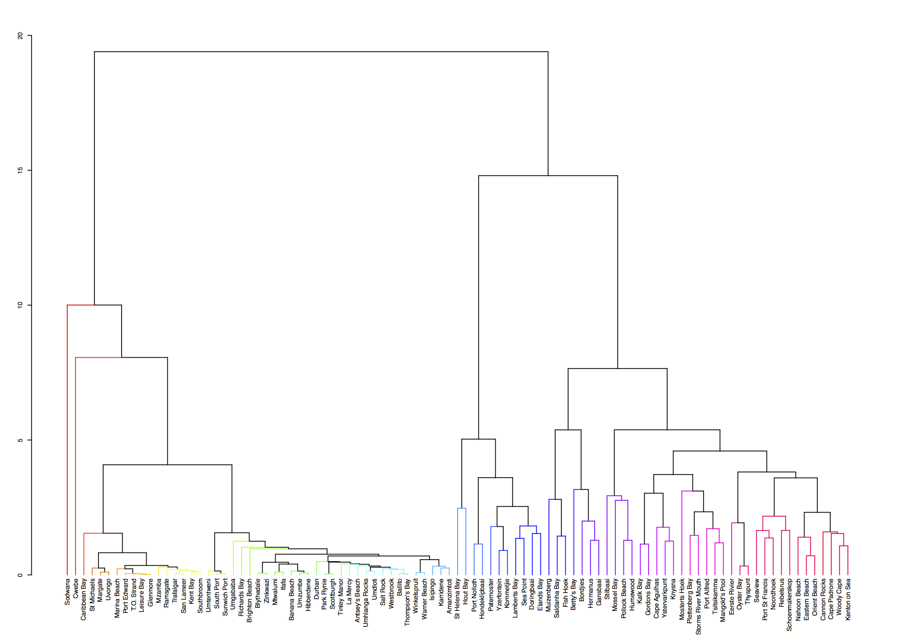
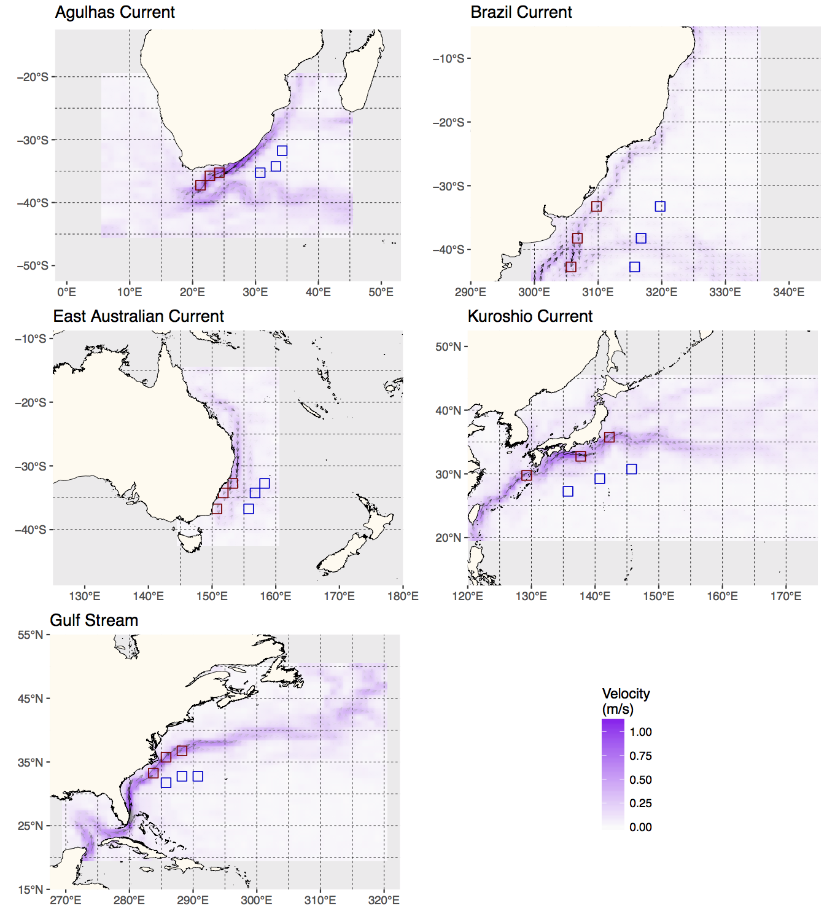

![]()
data()4. Graphics with ggplot2
Tapping ggplot for creative and informative graphics
“The greatest value of a picture is when it forces us to notice what we never expected to see.”
— John Tukey
“If I can’t picture it, I can’t understand it.”
— Albert Einstein
1 Introduction
Though it may have started as statistical software, R has moved far beyond it’s mundane origins. The language is now capable of a wide range of applications, some of which you have already seen, and some others you will see over the rest of this course. For the first half of Day 2 we are going to jump straight into data visualisation.
R has a rich library of graphics packages and functions, which allows for creation of various types of plots and graphs for visualising data in meaningful ways. Some of the interesting features of R graphics include:
Customisability Plots can be highly customised, from axis labels and titles to colours, markers, and themes.
Wide range of plot types R offers a variety of plot types, including scatter plots, line plots, bar plots, histograms, density plots, box plots, and more.
Integration with data analysis R graphics integrates well with the data analysis functions in R, making it easy to plot the results of statistical models and analyses.
Interactivity R graphics can be made interactive, allowing users to zoom, pan, and hover over data points to reveal more information.
Publication-quality R graphics can be generated in a high-resolution format suitable for printing or publishing, making it a popular choice for academic and scientific publications.
R comes with its own built-in graphics capabilities, and it is capable of creating an astounding array of figure types. In this course, however, I will use the increasingly popular ggplot2 package developed by Hadley Wickham.
2 Example figures
Just to whet the appetite, below is provided a small selection of the figures that R and ggplot2 are capable of producing. These are things that AJ and/or myself have produced for publication or in some cases just for personal interest. Remember, just because we are learning this for work, doesn’t mean we can’t use it for fun, too. The idea of using R for fun may seem bizarre, but perhaps by the end of Day 5 we will have been able to convince you otherwise!
 












3 ggplot2
R comes with basic graphing capability, known colloquially (by nerds like me) as ‘Base R’. The syntax used for this method of creating graphics is often difficult to interpret as there are few human words in the code. In addition to this issue, Base R also does not allow the user enough control over the look of the final product to satisfy the demands of many publishers. This means that the figures tend not to look professional enough (but still much better than Excel). To solve both of these problems, and others, the ggplot2 package was born. ggplot2 is a widely used and popular graphics package in R, based on Leland Wilkinson’s The Grammar of Graphics.
Although there are many advantages to using ggplot2 to Base R, people do at times raise a few issues with the package. These are criticisms I see mentioned on the internet from time to time, but my opinion differs and I add my own views in square brackets after each point:
Learning curve The package can have a steep learning curve for beginners, as it employs a different syntax and logic compared to base R graphics. Users may need to invest time and effort to become proficient in using ggplot2 effectively. [I think it is mainly long-time R users that hold this view. My view is that for first time users, it may be easier to learn compared to Base R Graphics.]
Customisation limitations Although ggplot2 provides extensive customization options, there are certain cases where users might find it difficult to achieve the desired level of customization for their plots. In some instances, base R graphics or other specialised packages might offer better control over specific plot elements. [Maybe, in specialised instances only. I will think of a few such instances and put them here. But I think recent the development of many add on pacages have largely eliminated many of the shortfalls people experienced early on. See for example the various extensions available.]
Performance Drawing figures made with ggplot2 (not the coding but the computational speed) can be slower than base R graphics, especially when dealing with large datasets or producing a high number of plots. This may not be ideal for users who require fast, real-time plotting or are working with limited computational resources.
Overhead The package relies on additional packages and dependencies, which can add to the overhead of managing the R environment. Users who prefer a more lightweight approach may find base R graphics more appealing.
Less suitable for 3D plotting It is true that ggplot2 is primarily designed for creating 2D graphics. It is possible to create 3D plots with some workarounds, but ggplot2 may not be the best choice for users who frequently work with 3D data visualisation. Other packages, such as lattice, scatterplot3d, or rayshader, may be better suited for these purposes.
Layered approach complexity The layered approach of ggplot2, while powerful and flexible, can become complex and verbose when building more intricate plots. This might lead to less readable and maintainable code in some cases. [I disagree. I personally find the code more readable, and very intuitive to understand. It is true that it can be quite verbose and that simple graphs can be quickly constructed in Base R with fewer lines of code.]
Nevertheless, ggplot2 remains a highly popular and versatile package for data visualisation in R. Its strengths in creating beautiful (but not always by default!), customisable, and complex graphics often outweigh its limitations. It is also less cluttered with non-nonsensical jargon terms and the vocabulary is easier to understand by mere humans—most of the package’s functions are English verbs. So, let us look at the basic concepts in some detail—I will do so mostly by working through numerous examples.
3.1 geom_*(), the pipe (%>% or |>), and the + sign
As part of the tidyverse (as we saw briefly on Day 1, and will go into in depth on Day 4), the ggplot2 package endeavours to use a clean, easy for humans to understand syntax that relies heavily on functions that do what they say. For example, the function geom_point() makes points on a figure. Need a line plot? geom_line() is the way to go! Need both at the same time? No problem. In ggplot2 we may seamlessly merge a nearly limitless number of objects together to create startlingly sophisticated figures. Before we go over the code below, it is very important to note the use of the + signs. This is different from the pipe symbol (|> or %>%) used elsewhere in the tidyverse. The + sign indicates that one set of geometric features is added to another, each building on top of what came before. In other words, we add one geometry on top of the next, and in such a way we can arrive at complex graphical representations of data. Effectively, each line of code represents one new geometric feature with its own aesthetic appearance of the figure. It is designed this way so as to make it easier for the human eye to read through the code.
+ signs in ggplot() code
One may see below that the code naturally indents itself if the previous line ended with a + sign. This is because R knows that the top line is the parent line and the indented lines are it’s children. This is a concept that will come up again when we learn about tidying data. What we need to know now is that a block of code that has + signs, like the one below, must be run together. As long as lines of code end in +, R will assume that you want to keep adding lines of code (more geometric features). If we are not mindful of what we are doing we may tell R to do something it cannot and we will see in the console that R keeps expecting more + signs. If this happens, click inside the console window and push the esc button to cancel the chain of code you are trying to enter.
3.2 aes()
Another recurring function within the parent ggplot() function or the associated geom_*() is aes(). The aes() function in ggplot2 is used to specify the mapping between variables in a dataframe and visual properties of a plot. aes() stands for ‘aesthetic,’ which refers to the visual elements of a plot, such as colour, size, shape, etc. In ggplot2, the aesthetics of a plot are defined inside the aes() function, which is passed as an argument to the base ggplot() function or its associated geometry.
For example, if you have a dataframe with two variables x and y, you can create a scatterplot of x against y by calling ggplot(data, aes(x, y)) + geom_point(). The aes(x, y) function maps the variables (columns) in the dataframe to the x and y positions of the points in the scatterplot. Similarly, we can map variables in the dataframe to aesthetic properties of the geometric features, such as colour (e.g. a colour might be more internse as the magnitude of the values in a column increase), size (larger symbols for bigger values), transparency, etc.
4 The ChickWeight dataset
Built-in datasets
R has many built-in datasets that are useful for practicing our R skills. To find out which datasets are available to you on your system, execute the following command:
A new tab will open and the list of datasets will be displayed. For example, the following might be displayed:
Data sets in package ‘datasets’:
AirPassengers Monthly Airline Passenger Numbers 1949-1960
BJsales Sales Data with Leading Indicator
BJsales.lead (BJsales) Sales Data with Leading Indicator
BOD Biochemical Oxygen Demand
CO2 Carbon Dioxide Uptake in Grass Plants
ChickWeight Weight versus age of chicks on different diets
DNase Elisa assay of DNase
EuStockMarkets Daily Closing Prices of Major European Stock Indices, 1991-1998
Formaldehyde Determination of Formaldehyde
HairEyeColor Hair and Eye Color of Statistics Students
Harman23.cor Harman Example 2.3
[...]The exact list might vary from user to user, as this depends on which packages have been installed on your system. For example, scrolling all the way to the bottom of the list produced above using the data() command, you’ll see the following information and code that can be executed to show all the datasets in all the packages available on your system:
Use ‘data(package = .packages(all.available = TRUE))’
to list the data sets in all *available* packages.A particular dataset can be loaded as follow:
data(acacia, package = "ade4") # the package name is listed also in the data() displayThe ChickWeight dataset can be seen in the list above. We will load and use it now.
# Load libraries
library(tidyverse)
# Load data
ChickWeight <- datasets::ChickWeight
# Create a basic figure
ggplot(data = ChickWeight, aes(x = Time, y = weight)) +
geom_point() +
geom_line(aes(group = Chick))
So what is that code doing? We may see from the figure that it is creating a little black dot for every data point, with the Time of sampling on the x axis, and the weight of the chicken during that time on the y axis. It then connects the dots for each chicken in the dataset. Let’s break this code down line for line to get a better idea of what it is doing.
The first line of code is telling R that we want to create a ggplot figure. We know this because we are using the ggplot() function. Inside of that function we are telling R which dataframe (or tibble) we want to create a figure from. Lastly, with the aes() function we tell R what the necessary parts of the figure will be. This is also known as ‘mapping’ (variables map to the visual appearance and arrangement of figure elements).
The second line of code then takes all of that information and makes points (dots) out of it, added as a layer on the set of axes created by the aes() argument provided within ggplot(...)—in other words, we add a ‘geometry’ layer, and hence the name of the kind of ‘shape’ we want to plot the data as is prefixed by geom_.
The third line takes the same information and creates lines from it—it adds yet another layer on top of the pre-existing one. Notice in the third line that we have provided another mapping argument by telling R to group the data by Chick. This is how R knows to draw an individual line for each chicken, and not just one big messy jagged line. Try running this code without the group argument for geom_line() and see what happens.
This figure doesn’t look like much yet. We saw some examples above that show how sophisticated figures may become. This is a remarkably straight forward task. But don’t take my word for it, let’s see for ourselves. By adding one more aesthetic to the code above we will now show each Diet as a different colour.
ggplot(data = ChickWeight, aes(x = Time, y = weight, colour = Diet)) +
geom_point() +
geom_line(aes(group = Chick))
Do any patterns appear to emerge from the data? Perhaps there is a better way to visualise them? With linear models for example?
ggplot(data = ChickWeight, aes(x = Time, y = weight, colour = Diet)) +
geom_point() +
geom_smooth(method = "lm")
How is a linear model calculated? What patterns do we see in the data now? If you were a chicken, which feed would you want?
5 To aes() or not to aes(), that is the question
The astute eye will have noticed by now that most arguments we have added to the code have been inside of the aes() function. So what exactly is that aes() function doing sitting inside of the other functions? The reason for the aes() function is that it controls the look of the other functions dynamically based on the variables you provide it. If we want to change the look of the plot by some static value we would do this by passing the argument for that variable to the geom of our choosing outside of the aes() function. Let’s see what this looks like by changing the colour of the dots.
ggplot(data = ChickWeight, aes(x = Time, y = weight)) +
geom_point(colour = "blue") +
geom_line(aes(group = Chick, colour = "blue"))
Why are the points blue, but the lines are salmon with a legend that says they are ‘blue’? We may see that in the line responsible for the points (geom_point()) we did not put the colour argument inside of the aes() function, but for the lines (geom_line()) we did. If we know that we want some aspect of our figure to be a static value we set this value outside of the aes() function. If we want some aspect of our figure to reflect some part of the data in our dataframe, we must set that inside of aes(). Let’s see an example where we set the size of the dots to equal the weight of the chicken and the thickness of the linear model lines to one static value.
ggplot(data = ChickWeight, aes(x = Time, y = weight, colour = Diet)) +
geom_point(aes(size = weight)) +
geom_smooth(method = "lm", size = 1.2)
Notice that we have set the size of the points and the lines, but one is within aes() and the other not. Because the size of our points equals the weight of the chickens, the points become larger the heavier (juicier) the chickens become. But because we set the size of the lines to one static value, all of the lines are the same size and don’t change because of any other variables.
6 Changing labels
When we use ggplot2 we have control over every minute aspect of our figures if we so wish. What we want to do next is put the legend on the bottom of our figure with a horizontal orientation and change the axis labels so that they show the units of measurement. To change the labels we will need the labs() function. To change the position of the legend we need the theme() function as it is within this function that all of the little tweaks are performed. This is best placed at the end of your block of ggplot2 code.
ggplot(data = ChickWeight, aes(x = Time, y = weight, colour = Diet)) +
geom_point() +
geom_smooth(method = "lm") +
labs(x = "Days", y = "Mass (g)", colour = "diet type") + # Change the labels
theme(legend.position = "bottom") # Change the legend position
Notice that when we place the legend at the bottom of the figure ggplot automatically makes it horizontal for us. Why do we use ‘colour’ inside of labs() to change the legend title?
Task C
-
With all of this information in hand, please take another five minutes to either improve one of the plots generated or create a beautiful graph of your own. Here are some ideas:
- See if you can change the thickness of the points/lines.
- Change the shape, colour, fill and size of each of the points.
- Can you find a way to change the name of the legend? What about its labels?
- Explore the different geom functions available. These include
geom_boxplot,geom_density, etc. - Try using a different color palette.
- Use different themes.
Submission instructions
Submit a R (Quarto) script wherein you provide answers to the Task questions by no later than 8:00 tomorrow.
Provide a neat and thoroughly annotated and labelled Rmarkdown file which outlines the graphs and all calculations (as necessary).
Please label the Rmarkdown and resulting HTML files as follows:
BCB744_<first_name>_<last_name>_Task_C.qmd, andBCB744_<first_name>_<last_name>_Task_C.html
(the < and > must be omitted as they are used in the example as field indicators only).
Failing to follow these instructions carefully, precisely, and thoroughly will cause you to lose marks, which could cause a significant drop in your score as formatting counts for 15% of the final mark (out of 100%).
Submit your Tasks on iKamva when ready.
7 Session info
installed.packages()[names(sessionInfo()$otherPkgs), "Version"]R> lubridate forcats stringr dplyr purrr readr tidyr tibble
R> "1.9.2" "1.0.0" "1.5.0" "1.1.1" "1.0.1" "2.1.4" "1.3.0" "3.2.1"
R> ggplot2 tidyverse
R> "3.4.1" "2.0.0"Reuse
Citation
BibTeX citation:
@online{smit2021,
author = {Smit, AJ},
title = {4. {Graphics} with Ggplot2},
date = {2021-01-01},
url = {https://tangledbank.netlify.app/BCB744/intro_r/04-graphics.html},
langid = {en}
}
For attribution, please cite this work as:
Smit A (2021) 4. Graphics with ggplot2. https://tangledbank.netlify.app/BCB744/intro_r/04-graphics.html.